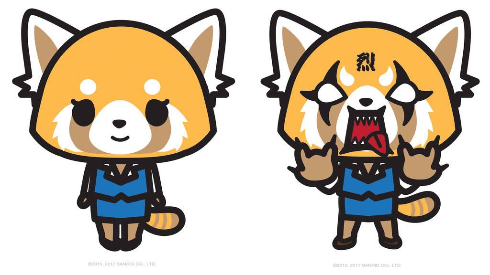
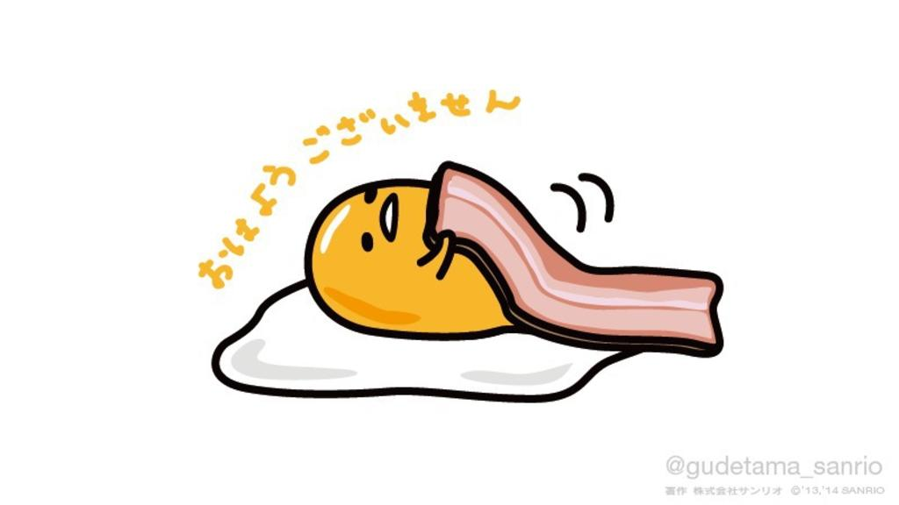
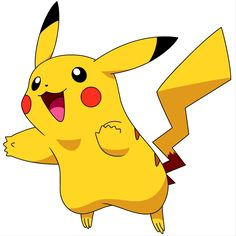

Aggretsuko egy egyedülálló, 25 éves vörös panda. Aranyos külseje ellenére azonban mélyen legbelül tele van dühvel. Aggretsuko mindig is arról álmodott, hogy a könyvelésben fog dolgozni, de nem erre számított. Mivel irodai munkája miatt folyamatosan feszült, a napi küzdelmeket munka után death metal karaoke-val igyekszik feldolgozni.
Gudetama egy Sanrio karakter, aki egy tojás. A Gudetama név japánról angolra lusta tojásként fordítható. Nincs neme, mivel megtermékenyítetlen tojás. Néha úgy ábrázolják, hogy egy tojásfehérjén fekszik, takaróként szalonnát használva.
Pikachu arról híres, hogy a legismertebb és legfelismerhetőbb Pokémon. Az évek során Pikachu annyira népszerűvé vált, hogy a Pokémon franchise kabalájaként szolgál.
 Bár Hello Kitty úgy néz ki, mint egy macska, valójában egy kislány. Japánban alkották meg, de úgy tervezték, hogy brit legyen, mert a japánok akkoriban a külföldi országok megszállottjai voltak. A Sanrio mottója a társadalmi kommunikáció, ezért választották a "hello" szót, annak ellenére, hogy egy ideig azon gondolkodtak, hogy "hi kitty"-nek hívják.
Bár Hello Kitty úgy néz ki, mint egy macska, valójában egy kislány. Japánban alkották meg, de úgy tervezték, hogy brit legyen, mert a japánok akkoriban a külföldi országok megszállottjai voltak. A Sanrio mottója a társadalmi kommunikáció, ezért választották a "hello" szót, annak ellenére, hogy egy ideig azon gondolkodtak, hogy "hi kitty"-nek hívják.